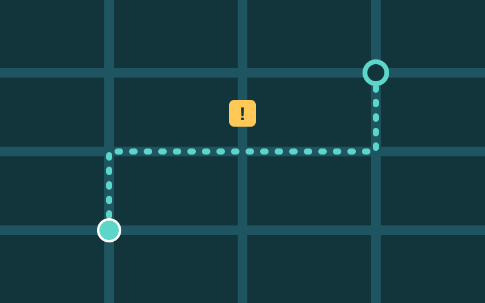

Ongoing Development
Accessibility-Aware Route Planner
A software system designed to help blind and visually impaired pedestrians navigate outdoor environments by considering accessibility and safety factors such as sidewalk obstacles, construction, difficult crossings, and challenging surfaces.